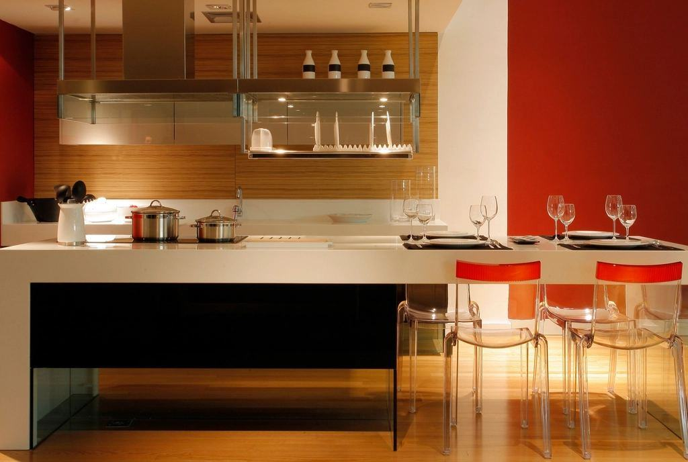

Fettet ska stanna i köket
Fett som når kommunens ledningar stelnar och orsakar stopp och bräddning till vattendrag. Rätt dimensionerade och skötta fettavskiljare är därför vår viktigaste miljöinsats. Det uppsamlade fettet körs till en biogasanläggning i Västerås och blir fordonsgas.
Fettet ska stanna i köket
Fett som når kommunens ledningar stelnar och orsakar stopp och bräddning till vattendrag. Rätt dimensionerade och skötta fettavskiljare är därför vår viktigaste miljöinsats. Det uppsamlade fettet körs till en biogasanläggning i Västerås och blir fordonsgas.
- 420 tonfett till biogas 2025
- 310kök med serviceschema
- 0anmärkningar vid tillsyn hos avtalskunder

Behörigheter för kök och livsmedel
- Fettavskiljare SS-EN 1825Vi dimensionerar och installerar enligt den europeiska standarden för fettavskiljare.
- LivsmedelshygienAlla montörer har grundutbildning i livsmedelshygien och förnyar den varje år.
- Säker VattenDiskmaskiner, blandare och beredare ansluts enligt branschreglerna, med återströmningsskydd.
- Behörighet gasinstallationTvå av våra montörer har kompetens för gasledningar i storkök enligt EGN.

Har du stått i ett kök? Då passar du här
Vi söker rörmokare som inte blir stressade av ett kök i full gång och gärna jobbar en natt i stället för en eftermiddag. Kockbakgrund är ett plus. Vi betalar ob-tillägg och ger ledigt på vardagar efter nattpass.
Fredagslunchen lagas av en av oss i verkstadens kök – Johan står vid spisen minst en gång i månaden.